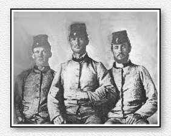

|
|
 |
|
|
|
Stephen and Robert were cousins. William was Stephen's nephew.
Here are their stories, taken from "Reliques of the Rives" by James Rives Childs 1929. This book contains dozens such accounts from the Civil War.
William Marshall Rives was born Dec. 12 1841 in Montgomery Co. Tennessee and died single, without issue, in November, 1863. He enlisted as a private in Co. L, 14th Tenn. Inf., C.S.A., and served until captured early in 1863 near Somerset, Kentucky. He had just joined Morgan and while out with a skirmishing party alighted from his horse, slipped the bridle over his arm, and stooped down to drink from a spring. The horse heard other horses approaching, jerked loose and escaped. Young Rives sought a hiding place behind a log but was detected in his place of concealment. He died of pneumonia while a prisoner of war at Pt. Lookout, Maryland. His father spent more than a thousand dollars to have his body brought back to his home. This took more than a year after the close of the war. Some time after that a comrade, who had found Billy's diary, sent it to his mother and father.
Stephen Turner Rives Jr. was born Oct 17, 1838, in Montgomery Co. Tennessee and died Jan 14, 1918 in Amherst Co. Virginia. During the war he joined the ranks of the Confederate Army and was later promoted to Lieut., Co. L, 14th Tenn. Infantry.
"The 1st, 7th and 14th Regiments composed a brigade that was known as Archer's Tennessee Brigade, A.P. Hill's Division, Army of Northern Virginia. This brigade took an active part in almost every battle fought by the Army of Northern Virginia. Comrade S.T. Rives was an ideal soldier, an I always depended on him in an emergency. On the 27th of June 1862 when our command broke Gen. McClellan's center, Steve Rives was one of the first Confederate soldiers to cross the enemy's breastworks, and was in every engagement during the campaign. In the battle of Antietam (Sharpsburg) he was wounded. Dr. Wright, surgeon of the 14th Tennessee Regiment had charge of the field hospital and as it was about 100 miles to the railroad He kept S.T. Rives and many others with him in the field hospital. When Gen. Lee crossed back to Virginia, all in the hospital were taken prisoners, and as soon as S.T. Rives could be moved he was sent to Johnson's Island. When exchanged he returned to his regiment and was in every engagement until the surrender April 5, 1865." - Gen. William McComb in "The Confederate Veteran"
Robert Franklin Rives was born Dec. 7, 1837, Montgomery Co. Tennessee and died September 26, 1922 in Clarksville, Tennessee. In 1861 he enlisted in the Confederate Army as a member of Company L, 14th Tennessee Cavalry, serving throughout the war and participating in many engagements. He was in Gen. Morgan's command [Co. E, Morgan's Men] when the famous raider invaded Ohio and was captured. Mr. Rives escaped by swimming his horse across the Ohio River. After Gen. Lee's surrender, he was captured at Paris, Tennessee., but was paroled.